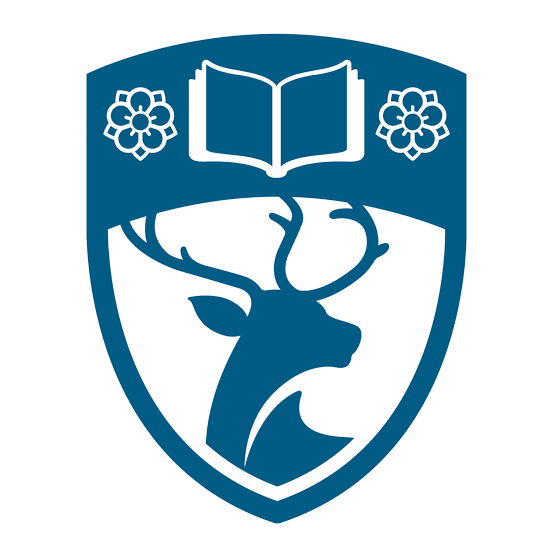

MAR 2026 — PRESENT
Teacher Trainer
Gyeonggi-do Institute for Global Education
경기도국제교육원
Professional development, educator and student curricula, Cheongsol Language School, and visiting school programs.
Teacher trainer &
curriculum designer
Seven years in Korean public schools taught me what classrooms need. I use that experience to create practical teacher training and English learning materials.
Good materials get better with use.
Explore a project to see the design process and samples.
7 projects
Choose another category or show all projects.
Gyeonggi-do Institute for Global Education
경기도국제교육원
Professional development, educator and student curricula, Cheongsol Language School, and visiting school programs.
Gangneung English Club / 강릉영어회화모임
Led a community of 200+ members, designing conversation materials and facilitating weekly sessions and cultural events.
Gangwon State Office of Education
강원특별자치도교육청
Developed original lesson materials, speaking assessments, camps, and free-semester courses. Mentored incoming native English teachers through a job-shadowing program.

University of Southampton
In progress · expected 2028
University of California, Santa Cruz
Honors in the Major · 2018
English: native
Korean: professional working proficiency
 Adobe creative tools
Adobe creative toolsStatistics
15+Schools visited for lessons
250+Educators reached through training
From teacher-training courses to English classroom games, I make materials with real teachers and students in mind. I try things out, listen to feedback, and keep improving them based on what works in practice.
I start by thinking about who I'm teaching, what they need to learn, and what will work best for their classroom.
I turn those needs into lessons, activities, and materials that are clear, engaging, and easy to use.
I see how things work in real lessons and training sessions, listen to feedback, and make changes for next time.
Interested in teacher development, ELT content, curriculum, and education-program roles.
한국어 가능